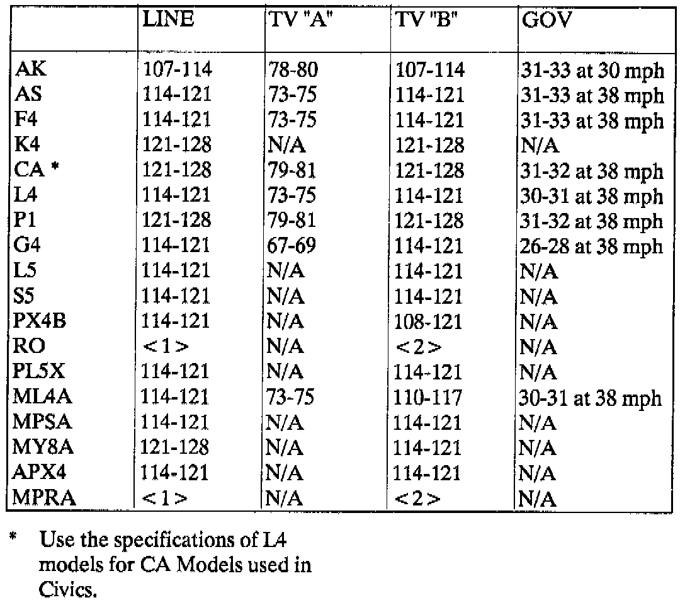

A/T - 4 Speed Pressure Specifications
TECHNICAL BULLETIN # 090TRANSMISSION: 4 Spd Automatics
SUBJECT: Pressure Specs.
APPLICATION: Honda/Acura
DATE: Jan 1992
Honda/Acura Pressure Readings

^ Line Pressure is measured at 2000 RPM in neutral or park.
^ T.V. pressure is measured at 1000 RPM with the shifter in drive and the T.V. lever in the max position.
^ All T.V. pressures should be 0 PSI at closed throttle. TV "B" should begin to rise the the instant the gas pedal is moved.
FOR ADDITIONAL INFORMATION
Transmission Digest "Technically Speaking"--October 1991